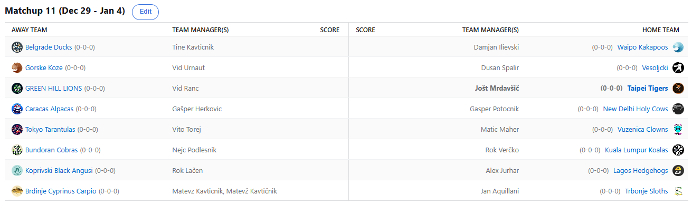

SEZONA 25/26
- Pravila in sistem tekmovanja
- Matchup1 (Oct 21 - Oct 26)
- Matchup2 (Oct 27 - Nov 2)
- Matchup3 (Nov 3 - Nov 9)
- Matchup4 (Nov 10 - Nov 16)
- Matchup5 (Nov 17 - Nov 23)
- Matchup6 (Nov 24 - Nov 30)
- Matchup7 (Dec 1 - Dec 7)
- Matchup8 (Dec 8 - Dec 14)
- Matchup9 (Dec 15 - Dec 21)
- Matchup10 (Dec 22 - Jan 28)
- Matchup11 (Dec 29 - Jan 4)
- Matchup12 (Jan 5 - Jan 11)
- Matchup13 (Jan 12 - Jan 18)
- Matchup14 (Jan 19 - Jan 25)
- Matchup15 (Jan 26 - Feb 1)
- Play-in (Feb 2 - Feb 22)
- Playoff 1 (Feb 23 - Mar 8)
- Playoff 2 (Mar 9 - Mar 22)
- Playoff 3 (Mar 23 - Apr 5)
2025/26 - Fantasy Koroška - sezona 9
MATCHUP 11 (Dec 29 - Jan 4)
Recap: MATCHUP 11
Novoletni matchup je od samega začetka dišal po novem najvišjem scoru tedna in za razliko od korona časov zdaj naš voh deluje brezhibno.
Prejšnji mejnik 1473 točk so presegle kar 3 ekipe. Naj omenimo še, da se je šele prvič v zgodovini lige zgodilo, da se niti en matchup
ni končal z razliko manjšo od 100 točk. Hkrati je skupna razlika 2652 točk za 8 matchupov z naskokom najvišja ever.
O novem najboljšem weekly scoru govori tudi nova epizoda risanke Prigode Posranka Posrankiča. Osredotoča se na petkov večer in neverjetnih 397 točk od zgolj 9
igralcev moštva Ankaran Shrimps. To je bil odločilen dan v bitki za najboljši score tedna in gospod Nejc »skos prazn IR« Podlesnik je
prevzel vodstvo tudi v tem virtualnem boju. Hkrati je Cicko zdaj tudi sam rekorder za najdaljši winning streak – 11 zmag zaporedoma. To
je 11x več kot pa je imel do sedaj poškodb, trajajočih dlje kot 2 dni. Kolo sreče se okreče in videli bomo, kaj Nejca čaka, ko bo to najbolj pomembno.
O njegovem »nasprotniku« tokrat ne bi izgubljali besed, Verčko namreč letos tekmuje bolj sam s sabo in s poškodbami kot z drugimi managerji.
No, je pa pred Rokijem zelo pomemben matchup. Če mu uspe na tleh-ležečega konja Matevža še enkrat konkretno brcniti, se bo slednji moral boriti v zadnjih krogi s
cca 10% možnostmi za končnico. No, pa kaj, gajba Orla je baje na hladnem že od oktobra. Matevž, ki mu zmage bežijo kot on sam uniformiranim
krojtlihom, je tudi tokrat bil brez pravih možnosti, ko ga je odpihnil Kups s svojimi Lenivci. Po katastrofalnem začetku je zdaj že na zelo
zelo visokem 7. mestu in bo vsekakor strah in trepet srednjega dela lestvice.
Tudi Voka se ni pretirano oznojil v tem tednu. Bil je eden izmed tistih, ki so dosedanji rekord za best weekly porušili, a bo to popolnoma irelevantno. Se mu vidi,
da je navajen pihati, kajti tokrat je iz prepone potegnil močno sapo, ki je že v ponedeljek porušila Jurharja in vse njegove upe. Tole je
bil celo Aleksov najhujši poraz v zgodovini, 502 točki pa sta mejnik, ki ga bomo vsi zapriseženi hejterji te pogosto seljene franšize želeli
še nekoliko dvigniti v prihodnosti. Tale podatek bo Freda bubal kot Herrona prstek na nogici, ali si bo kaj prej opomogel kot njegov pravkar
omenjeni »stealček«.
Še eden, ki je đabe podiral rekord pa je Jole. 1550 točk je vsekakor izvrsten dosežek, ko pogledamo še na klopco za poškodovane, kjer se skriva še veliko zaloge.
4. zaporedna zmaga za Jolkona, ki je dokazal, da je Lev kralj živali le če Tigra ni v bližini. Kaj bi šele bilo, če ne bi v vlogi Božička
sezone rešil še Urnautu z darilom v obliki Kawhija? Nič niso rjoveli Levi z Zelenbrega, pravzaprav so le malo mjavkali v ponedeljek, potem
pa je bilo čisto tiho. To je že kar 5. zaporedni poraz za Ranaca in s tem »dosežkom« se lahko pohvali le še Verčko. Bo Vid tudi letos po dobrem
začetku ostal brez pravega rezultata?
Belgrade Rubber Duckies, kot jih je poimenoval gospod Chat, pa še naprej upravičujejo ta vzdevek. Ko ogromna pleča (oz. v tem primeru kolena) Somborskega Jokerja popoustijo,
se Tinki Binki nikakor ne znajde in še doooooooolgi 3-4 tedni rednega dela brez Jokare ga čakajo. No, je pa vseeno še ravno pravi čas na tem
prisilnem dopustu in če bo igral v končnici, se Tine nikakor ne bo sekiral za izhodišče po rednem delu. Je pa to odsotnost s pridom izkoristil
Ilja in če je morda na začetku kazalo, da bo ponovno bolj pri dnu razpredelnice, je zdaj že v deseterici in tokrat mu playoffi ne uidejo.
Do kod lahko poseže?
Zadnji čuha-puha za Duleta je že zapustil postajo, ali ga bo Dušan še sploh poskušal uloviti, ali pa je vrgel puško v koruzo in je to to z njegove strani? Nič kaj ne kaže,
da bi še imel neko pretirano upanje in upamo, da je to zgolj slaba sezona in ne začetek konca kariere tega sicer cenjenega in izkušenega stratega,
ki je z nami že od začetka. Pomiri nas, Dušan! Previsoka ovira je tokrat bil Urnaut, ki je s svojimi Kozami po trejdu končno našel pravi ritem
in je v seriji 3 zaporednih zmag. Kot je sam dejal, je bolj šprinter kot maratonec in upamo, da mu čim dlje ne zmanjka moči.
Ostala sta nam le še »zanimiva« matchupa. Vito še naprej niti sam ne ve, kako mu uspe vse te matchupe zmagati in kako za vraga je lahko 10-1. Vsekakor je na 99% zdaj že
zagotovljen celo BYE za Torresa in povsem sproščeno se lahko do konca rednega dela še prebiti celo do prvega seeda in 20€. Blizu je bil Matic,
ki je s 1258 točkami postal najbolj nesrečni poraženec sezone do zdaj - prav poetično, da ravno proti Vitu – a vendarle ni bilo dovolj. Tokrat
mu vsaj ne bo treba prinesti gajbe, ali lahko kaj naredi v končnici pa bomo še videli.
Še zadnji obračun pa je bil prava nočna mora za Herkovičevega poba, ki je izgubil proti Indijcem. Tako se je hvalil, kako bo svoje večne sovražnike natepel,
pa se kot ponavadi, najedel zarečenega kruha. Blizu je sicer bil, a kot pravijo, skor bi zajc lovca ustrelo in tako je obračun za
najboljšega Gašperja dobil G€P$. Slednji je to zmago še kako potreboval, saj je zdaj nekoliko mirnejši v bitki za končnico in se z
rutiniranimi 89% možnosti za uvrstitev zdaj posmehuje srotekom pod njim. Preskok iz avspuharskih voda do normalnih managerjev je zelo
težek in na tem mestu si Geps zasluži iskrene čestitke.
V 12. tednu nas čaka derbi začelja, ko Mati Kavtamekki lovi zadnji zadnji vlak za končnico, nerazpoložene Koale bo poskušal premagati Dušan, ki mu prav tako
ne kaže najbolje. Na vrhu pričakujemo neizprosen boj Posrankonovega bestiča Vitona in vročih Tigersov, od ostalih obračunov pa si
nadejamo vsak kakšnega zanimivega, ne tako kot ta teden.
Ne pozabite na predictione in srečno!